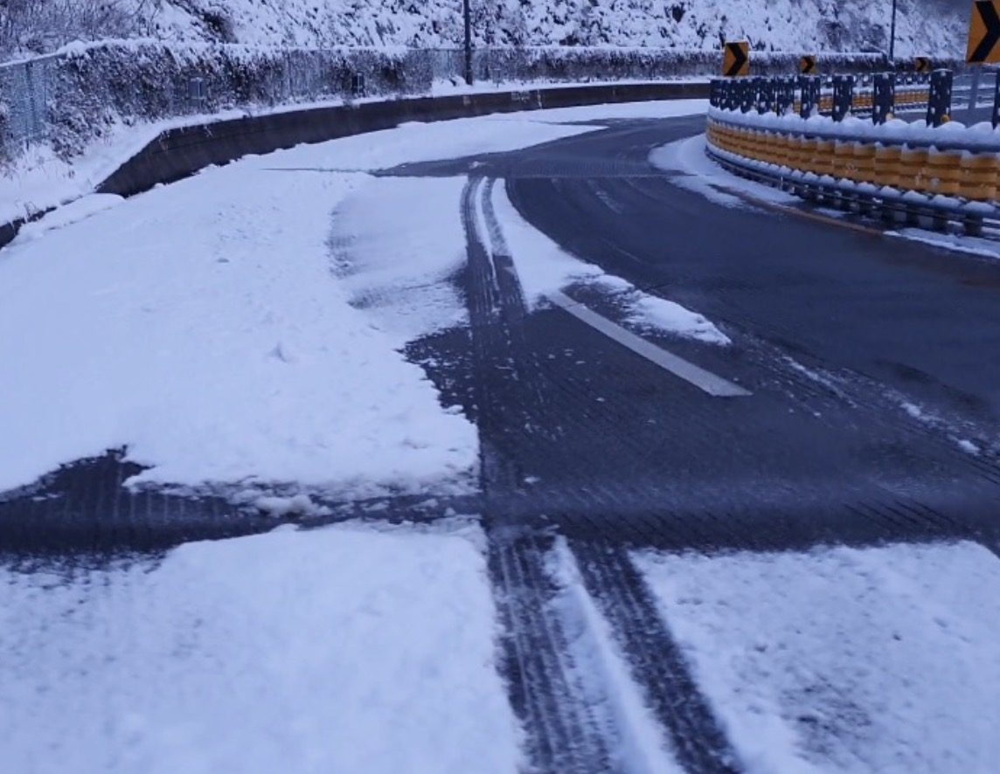

WINTER DE-ICING
겨울철 스마트 원격 염수분사
겨울에는 원격 염수분사, 여름에는 스마트 원격 살수
하나의 시스템으로 사계절 활용이 가능합니다.
하나의 시스템으로 사계절 활용이 가능합니다.
겨울철에는 액상 제설제를 도로에 원격 분사하여 강설 초기 대응, 노면 결빙 예방 및 재결빙 억제에 활용할 수 있습니다.
- 1. 강설 초기 신속 대응눈이 쌓이기 시작하는 초기에 액상 제설제를 원격 분사하여 제설 작업을 신속하게 진행할 수 있습니다.
- 2. 상습 결빙구간 관리교량, 터널 진출입부, 급경사로, 응달구간 등 겨울철 상습 결빙구간의 안전관리에 활용합니다.
- 3. 노면 결빙 및 재결빙 억제액상 제설제가 노면의 어는점을 낮춰 눈과 얼음이 녹도록 돕고, 노면 재결빙 위험을 줄이는 데 활용됩니다.
- 4. 원격 염수분사관리자가 현장에 직접 가지 않아도 PC나 모바일을 통해 필요한 구간에 원격으로 액상 제설제를 분사할 수 있습니다.
- 5. 다수 현장 통합관리여러 곳에 설치된 염수분사장치를 원격으로 확인하고 운영하여 제설 취약구간을 효율적으로 관리할 수 있습니다.
신속 제설강설 초기 빠른 대응
결빙 예방노면 결빙 및 재결빙 위험 저감
원격 관리PC·모바일을 통한 분사 제어
※ 실제 제설 및 결빙 억제 효과는 제설제의 종류와 농도, 외기 온도, 강설량 및 노면 상태에 따라 달라질 수 있습니다.